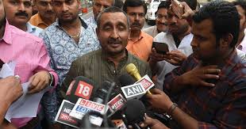
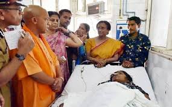

Some may say he could have spoken sooner but Narendra Modi assured the nation that those who are guilty of crimes against women shall not be spared and India's women will definitely get justice. The prime minister's statement comes in the backdrop of nationwide outrage over Unnao and Kathua rape-and-murder incidents that have shaken the nation's conscience. LUCKNOW: Uttar Pradesh Chief Minister Yogi Adityanath was honoured with the title of 'Dalit Mitra' by the Ambedkar Mahasabha in Lucknow on Saturday on the occasion of Ambedkar Jayanti.
The depravity of the crime in Jammu's Kathua where an eight-year-old girl was kidnapped, sedated, raped, tortured and eventually killed and subsequent developments that sought to turn the criminal incident into a communal flashpoint in a volatile region raised disturbing questions about the failure of India's criminal justice system when it is politically inexpedient to take action against the accused.
The rape in Unnao, that happened last year, came to light when the victim tried to self-immolate before Chief Minister Yogi Adityanath's residence last week. Her father died under mysterious circumstances in police custody. BJP MLA Kuldeep Singh Sengar, the accused and local power broker, proved too powerful for the Yogi administration and roamed around with a swagger till he was eventually detained after the case was transferred to the CBI. The administrative apathy in twin cases put the BJP under pressure and paved the way for the Opposition to target the prime minister.


Congress president Rahul Gandhi organised a midnight protest march demanding justice for the victims and lashed out at the prime minister's silence, after breaking his own silence on the Kathua incident after a period of deliberation. The prime minister is not known for bowing to Opposition pressure but he may have realised that the anger over Kathua and Unnao was vociferous, organic and had crossed a certain line where not speaking would be tantamount to complicity.
Speaking during the inauguration of Ambedkar Jayanti, Modi said: "Incidents being discussed since past two days cannot be part of a civilised society. As a country, as a society, we all are ashamed of it. I want to assure the country that no culprit will be spared, complete justice will be done. Our daughters will definitely get justice."
Modi added that there is a need for all to "come together", keeping aside differences when it came to crimes against women.
"Such incidents, be it in any state of the country, shatter human emotions. I want to assure the nation that no culprit will be spared. Justice will be done. We all need to come together in fight against such evil of the society."
“It is a simple resignation letter, but they have done it to save party from the adverse publicity going on in the media about their publicly supporting the Hindu Ekta Manch who have been demanding shifting of investigations into the girl’s rape and murder case from state’s Crime Branch to CBI,” according to state chief spokesperson Sunil Sethi.
UP CM Yogi Adityanath honoured with title of 'Dalit Mitra' on Ambedkar Jayanti
Addressing the event, Adityanath said that the BJP government has worked tirelessly for the upliftment of Dalits. "The BJP government, under the leadership of Prime Minister Narendra Modi, has worked tirelessly for the emancipation and upliftment of Dalits by the construction of more than 40 lakh toilets in the rural areas," he said.
Remembering the role that Dr Bhimrao Ambedkar has played for the lives of Dalits he added: "Babasaheb has made a number of provisions in the Constitution of India to remove social disparities and provide social justice to the oppressed sections of the society...Every citizen of India will always remain obliged towards the contribution of Babasaheb. Babasaheb struggled throughout his life for the rights of Dalits and oppressed sections of the society."